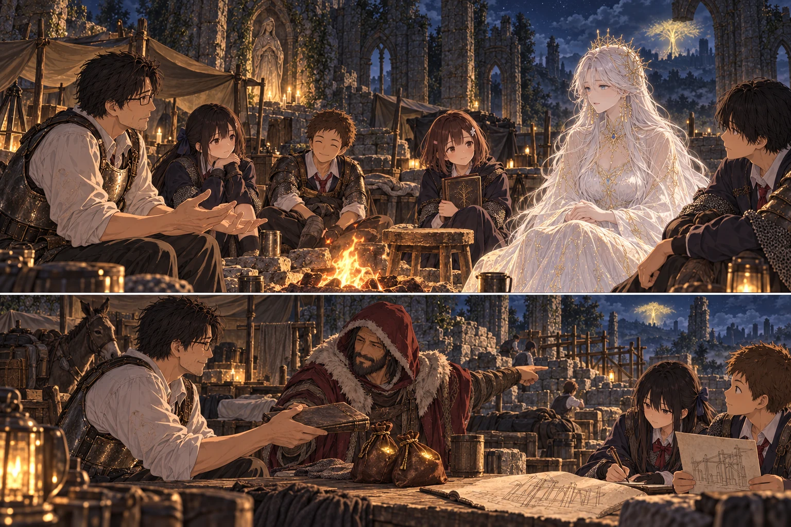

DAY97 / TURN1−109
帰る人、ここに残すもの。

「あの人にも、もう一度、行き先を選ぶ朝があってほしい」
【DAY97・十八時四十分／エレの教会】名前を呼び終えてからも、私はしばらく帳面を閉じられなかった。三十三人。何度数えても同じなのに、指で最後の行をなぞった。外では誰かが鍋を洗っている。剣のぶつかる音ではない。その音を聞きながら、ようやく鎧の留め具を一つ外した。
澪が、残ったルーンの数を読み上げた。五万三千九百四十八。朝には、これであと何を買えるかを考えていた。今は、置いていく先を考えていた。けれど、その前に聞かなければならないことがある。
「リュシア。約束どおり、聞かせてほしい」。帰還契約の文字へ呼びかける。少し待つと、焚火の向こうが白く明るくなった。今夜は皆の顔が、同じ方向へ上がった。女神は欠けた壁のそばに立っていた。初めて会った時より、ずっと近くに見えた。
【十九時／境界の女神】「三十三人、ここにいますね」。リュシアは言った。私は頷いた。「勝った。けれど、まだ結末を選んでいない。俺たちが帰ったあと、この世界はどうなる。ここで生きている人たちまで、終わりにするわけじゃないんだろうな」
「期限までに結末が成立すれば、この世界は残ります」。女神は、はっきり答えた。「百日目の消滅と、十日ごとに迫る赤い月。それらを終えることができます。あなたたちが去っても、ここにいる人の明日は続きます」
結衣が膝の上で握っていた手を緩めた。すぐには笑わなかった。「じゃあ、直した壁も、水汲み場も」。リュシアが頷く。「残ります。ただし、直していない屋根が勝手に戻るわけではありません。争いも、飢えも、あなたたちの勝利だけですべて消えるものではありません」
誠が、頭上を見た。雨を受ける布と、その上の穴。皆で直した所と、どうしても手が回らなかった所が、夜空を境に並んでいた。世界が残るというのは、明日も誰かがあの穴を見上げるということだった。
「俺が王になったら、ここへ残ることになるのか」。帰れない者を、一人だけ作るような結末では困る。女神は首を横に振った。「あなたも、帰還の約束の対象です。王になった者だけを置き去りにする条件を、今から付け加えはしません」
それで、この土地を誰が治めていくのかまで決まったわけではない。王座に座ることと、明日の水や食事を整えることは、同じ一つの動作ではなかった。私は隣の生徒たちを見た。ここまで来る間、それを何度も彼らに教えられた。
【火のそばの空席】「メリナは」。紬の声が小さく落ちた。女神は、今度はすぐに答えなかった。私は待ってから、言葉を足した。「あの人がいなかったら、ここへは来られなかった。戻せるなら、戻ってほしい。本人が、それを望むなら」
焚火が一度、細く鳴った。あの釜で見た火とは違った。触れば熱い、鍋を温めるための火だった。葵は聖印を握っていた手を開いた。治す祈りを覚えても、治せなかった別れがあった。
「あの時を巻き戻すことはできません」。リュシアが言った。「彼女が種火となったことも、それによってあなたたちが進めたことも、消せません。あなたたちの祝福の約束を、後から彼女にも当てはめることはできないのです」
紬は唇を結んだ。それを見てから、女神は続けた。「ですが、結末によって世界が安定すれば、その境界へ呼びかけることはできます。メリナ自身の意志がまだ届くところにあり、彼女が戻ることを望むなら――この世界へ迎え直す道を、探れます」
「俺たちの記憶から、似た誰かを作る、という話じゃないんだな」。女神は頷いた。「それを、彼女が戻ったとは呼びません」。葵が、開いた手を膝に置いた。そこは、曖昧にしてほしくなかった。
「誰かを代わりに残すとか、そういうのは？」。蓮が聞いた。「求めません。あなたたちの命も、帰る権利も。これは、誰か一人を選んで減らす話ではありません」。女神はそれでも、できるとは言い切らなかった。声が届くか。届いた時、彼女が何を望むか。それは、まだ誰にも分からない。
新しい敵を倒す必要も、どこかへ品を取りに行く必要もない。まず、この世界の結末を成立させる。その先で、本人へ問いかける。ただし、私たちの世界へ連れて帰れるという話までは、決まっていなかった。
「聞ける可能性があるんですね」。紬が言った。女神は今度こそ頷いた。私は、先生として何かをまとめようとして、やめた。願いを言い終えたばかりの生徒の前で、早く結論を作る必要はなかった。
リュシアの光が薄くなった。消える前に、女神は言った。「まだ、結末は成立していません。今夜お話ししたことは、その先の約束です」。赤い月の災害も、期限も、まだ終わったことにはならない。私たちは同じ言葉を聞き、澪がそのまま書き留めた。
【二十時／馬は王を知らない】花に呼ばれ、教会の脇の草地へ出た。美咲の近くに、あの大きな軍馬がいた。黄金の馬具には旅の汚れが残っている。あの騎士を倒した日の、地面を叩く音を思い出した。今は、草を噛む音がしていた。
「先生、急に首へ手を出さないで。下から」。花の言うとおり、掌を見せる。鼻先が近づき、短く触れた。息が温かかった。乗っていいという合図ではない。それでも、私が前に立っていることを、追い払おうとはしなかった。
「結局、お前に乗って偵察には行けなかったな」。私が言うと、美咲が笑った。「慣れなかったわけじゃないですよ。撫でたり、手入れしたりはできるようになったんです。乗る練習を、まだしていないだけで」。少し間を置いて、花も笑った。「ずっと、先生の方が忙しかったですし」
馬は、それを聞いても何も答えず、また草へ鼻を下げた。王の前に立った日のうちに、馬からはその程度の扱いを受けている。私はそのことに、妙にほっとした。今夜は乗らない。帰ったあとも誰が見守れるか、話しておかなければならないことが、一つ増えた。
【颯の言葉】草地から戻ると、颯が入口の石に座っていた。腰の指笛を、指先でいじっている。私は隣に立ち、少し迷ってから言った。「一度、お前を死なせた。それだけは、勝ったからよかったとは言えない」
颯はすぐに大丈夫ですとは言わなかった。襟元へ指をやり、そこにある細い傷を確かめた。「怖かったです」。私は頷いた。「うん」。ほかの言葉を急いで重ねるのは、私が楽になりたいからのような気がした。
「でも、戻してくれたじゃないですか」。颯は指笛から手を離した。「それから俺も、仕事はしました。あの一回のところだけで、止まってたわけじゃないんで」。教会の中を見ていた。誰かが寝床を直し、誰かがその手伝いを断って、自分でやると言っている。
「忘れていいってことじゃ、ないですけど」。颯が付け足した。「……うん」。今度の返事は、さっきより難しかった。傷は消えない。怖かったことも消えない。それでも、今話している彼は、あの日に取り残されたままの彼ではなかった。
颯が立ち上がった。「明日のこと、決まったら教えてください」。私は頷いた。今ここにいる生徒へ、明日の話をする。その当たり前の順番へ戻るまでに、九十七日かかった。
【二十時四十分／五万三千九百四十八】カーレは自分の火のそばにいた。こちらの顔を見ると、いつもの調子で尋ねた。「今度は何が要るんだい」。私は隣へ腰を下ろし、帳面と、分けておいたルーンを置いた。「今日は、頼みたいことがある」
「三千九百四十八は、これまで世話になった礼に。残りの五万は、この教会の再建に使ってほしい」。カーレは数字を聞き直した。それから私の顔を見た。「あんた、自分たちの買い物はどうする」。私は樹の方を見た。「戦いは、終わらせた。帰る時に、ここへ何か残していきたい」
最初の鍋と水袋は、すでに買い取っている。貸し借りを曖昧なまま押しつけるための金ではない。澪が開いた頁には、謝礼と再建費が別々に書かれていた。追憶や武器まで売ったわけでもない。今、共同財布にあるルーンを、全部だった。
誠が、使い込んだ屋根の図を広げた。楓が指で二箇所を示す。「この支え方は、ちゃんと石を扱える人に見てもらってください。私たちのままじゃ、高く積むのは怖いんです」。カーレは、すぐに明日完成するなどとは言わなかった。紙を傾け、火に近づけすぎないよう、卓の端へ置いた。
「俺は石工じゃない。けれど、物を仕入れて、人を探すことならできる」。カーレは五万の方へ手を添えた。「ここから払った分は、残しておこう。誰かが覗きに来ても、何に使ったか分かるようにな」。澪が同じ内容をもう一枚書き、受取の印をもらった。
結衣が口を開いた。「できれば、次に来た人も、雨を避けられる場所に」。それから少し照れたように、補った。「私たち専用じゃなくて」。カーレは教会を見回した。壁際の寝床、桶、揃わない椅子。人が暮らすために少しずつ形を変えた廃墟を。
「それなら、商売にもなる」。カーレは笑った。「雨の中を追い返すより、話のできる客が増えた方がいい」。大きな約束を飾る声ではなかった。だからこそ、明日もここにいる人の言葉に聞こえた。
帳面の残高が、零になった。皆の力を上げるために、剣を鍛えるために、失わないよう何度も数えてきた数字だった。零を見て、胸が冷たくならなかったのは、初めてだった。
【二十一時／まだ欠けている屋根】工事は、まだ始まっていない。雨よけの布は布のままで、高い壁も欠けたままだった。それでも、材料を買い、人の手を借りるための金と、使い道を記した紙が、この世界に残った。
中へ戻る時、紬が空けていた椅子を、火に少し近づけた。誰かがもう座っているわけではない。メリナの声も、今夜は聞こえなかった。私はそれを、何かが叶った証拠にはしなかった。ただ、その椅子を片づけようとは思わなかった。
終わらせる戦いは、終えた。これから選ぶのは、誰の明日を残すかだった。私たちが帰ったあとにも、この火のそばで誰かが温まれるように。そして、もし本人が望むなら――あの旅人にも、もう一度、行き先を選ぶ朝があるように。
今回の処理記録（抽選なし）
| 判定 | 出目 | 補正 | 合計 |
|---|
| 対話と合意した資金処理のみ。成功・失敗の抽選は行っていません。 |
対話・会計の条件 · 処理記録